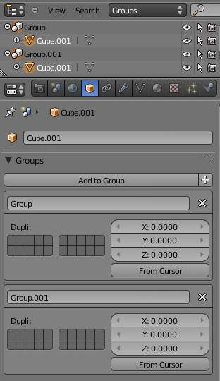

Grouping objects¶
Grouped objects.
There can be many objects in a scene: A typical stage scene consists of furniture, props, lights, and backdrops. Blender helps you keep everything organized by allowing you to group like objects together.
Group objects together without any kind of transformation relationship. Use groups to just logically organize your scene, or to facilitate one-step appending or linking between files or across scenes. Objects that are part of a group always shows as light green when selected. See Fig. Grouped objects..
Options¶
- Creating a Group
Ctrl-Gcreates a new group and adds the selected object(s) to it.- Naming a Group
All groups that an object has been assigned to are listed in the . To rename a group, simply click in the groups name field. To name groups in the Outliner editor, select Groups as the outliner display from the header combo box, and
Ctrl-LMBclick on the group name. The name will change to an editable field; make your changes and pressReturn.Naming a Group.
- Restricting Group Contents via Layers
- The cluster of layer buttons attached to each group determines from which layers the group objects will be included when duplicated. If your group contains objects on layers 10, 11 and 12, but you disable the layer 12 button in the group controls, duplicates of that group (using the Dupligroup feature) will only show the portions of the group that reside in layers 10 and 11.
- Appending or Linking Groups
- To append a group from another blend-file, consult this page. In summary, Select a blend-file and, and then the group.
- Removing Groups
- To remove a object from a group, in the Properties editor Object tab, open the “Groups” panel. Find the name of the group from which you wish to remove the object, and click the x to the right of the group name.